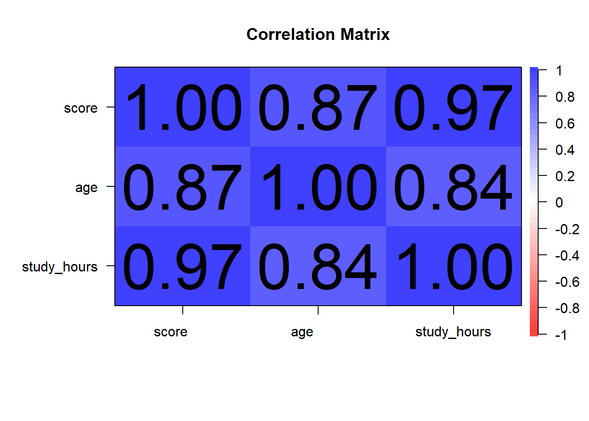

Chapter 5 Computation
5.1 Overview of the Importance of Data Computation and Manipulation in Psychological Research
In psychological research, data computation and manipulation are crucial steps that transform raw data into meaningful information. These processes allow researchers to clean, organize, and analyze data effectively, leading to more accurate and reliable conclusions.
5.2 Importance of Data Computation and Manipulation
Data Cleaning:
Ensures the accuracy and consistency of data.
Involves identifying and correcting errors, handling missing values, and removing outliers.
Prevents erroneous results that can arise from flawed data.
Data Organization:
Facilitates easier analysis and interpretation.
Involves structuring data in a logical format, such as tidy data principles where each variable forms a column and each observation forms a row.
Enhances the readability and usability of the dataset.
Data Transformation:
Involves converting data into a suitable format for analysis.
Includes normalization, aggregation, and creating new variables.
Enables the application of various statistical techniques and models.
Data Exploration:
Provides insights into data distributions, relationships, and patterns.
Utilizes descriptive statistics and visualization techniques.
Helps in forming hypotheses and guiding further analysis.
Ensuring Reproducibility:
Essential for validating and replicating research findings.
Involves documenting and sharing data manipulation steps and analysis scripts.
Enhances transparency and credibility of the research.
By systematically computing and manipulating data, psychological researchers can ensure the integrity of their data, leading to more robust and credible research outcomes.
5.3 Brief Introduction to R’s Capabilities for Data Handling
R is a powerful statistical programming language widely used in psychological research for data handling, analysis, and visualization. Its extensive package ecosystem and versatile functions make it an ideal tool for various data manipulation tasks.
5.3.1 Key Capabilities of R for Data Handling
Data Importation:
R can import data from various sources, including CSV files, Excel files, databases, and web APIs.
Functions such as
read.csv(),read_excel(), anddbConnect()facilitate data importation.
Data Cleaning:
R provides functions to handle missing values (
na.omit(),is.na()), detect and remove outliers, and correct data entry errors.The
dplyrpackage offers a range of functions (mutate(),filter(),select(),rename()) for efficient data cleaning.
Data Transformation:
R allows for data transformation through functions like
mutate()for creating new variables,summarize()for aggregation, andspread()/gather()for reshaping data.The
tidyversepackage is particularly useful for data transformation tasks.
Data Visualization:
R supports various visualization techniques through packages like
ggplot2,lattice, andplotly.These packages enable the creation of informative plots such as histograms, scatter plots, and boxplots.
Statistical Analysis:
R is equipped with numerous statistical functions and models, including t-tests, ANOVA, regression analysis, and more.
The
statspackage provides foundational statistical functions, while specialized packages likepsychoffer additional tools for psychological research.
Reproducibility:
RMarkdown and
knitrallow for the creation of dynamic documents that integrate code, output, and narrative text.These tools facilitate reproducible research by enabling researchers to document and share their analysis workflows.
5.4 Importing Data from Excel Files
In psychological research, data is often stored in Excel files, either in CSV (.csv) format or Excel Workbook (.xlsx) format. Importing this data into R is a crucial first step in data analysis. This section covers the process of importing data from both .csv and .xlsx files using R.
5.4.1 Importing .csv Files
CSV (Comma-Separated Values) files are a common format for storing tabular data. They are simple text files where each line represents a row in the table, and columns are separated by commas.
5.4.1.1 Step-by-Step Guide to Importing .csv Files
Prepare the CSV File: Ensure the CSV file is properly formatted with a header row containing column names.
Set the Working Directory: Set the working directory in R to the location of the CSV file.
Use
read.csv()Function: Use theread.csv()function to read the data into R.
# Set the working directory to the location of your CSV file
setwd("path/to/your/folder")
# Import the CSV file
data_csv <- read.csv("your_file.csv")
# View the first few rows of the data
head(data_csv)Suppose you have a CSV file named “study_data.csv” containing participant responses to a psychological survey.
# Set the working directory
setwd("path/to/your/folder")
# Import the CSV file
study_data <- read.csv("study_data.csv")
# View the first few rows of the data
head(study_data)This code sets the working directory, imports the CSV file, and displays the first few rows of the dataset.
5.4.2 Importing .xlsx Files
Excel Workbook (.xlsx) files are another common format for storing data. They can contain multiple sheets and more complex formatting than CSV files. The readxl package in R allows for easy import of .xlsx files.
5.4.2.1 Step-by-Step Guide to Importing .xlsx Files
Install and Load the
readxlPackage: If you haven’t already installed thereadxlpackage, you can do so usinginstall.packages().Use
read_excel()Function: Use theread_excel()function to read the data from the Excel file.
# Install the readxl package (if not already installed)
install.packages("readxl")
# Load the readxl package
library(readxl)
# Import the Excel file
data_xlsx <- read_excel("path/to/your/file.xlsx")
# View the first few rows of the data
head(data_xlsx)Suppose you have an Excel file named “experiment_data.xlsx” with multiple sheets. You can specify the sheet to read from using the sheet argument.
# Load the readxl package
library(readxl)
# Import the Excel file, reading from the first sheet by default
experiment_data <- read_excel("experiment_data.xlsx")
# View the first few rows of the data
head(experiment_data)
# Import data from a specific sheet
experiment_data_sheet2 <- read_excel("experiment_data.xlsx", sheet = "Sheet2")
# View the first few rows of the data from Sheet2
head(experiment_data_sheet2)This code demonstrates how to import data from an Excel file and how to read data from a specific sheet within the file.
5.4.3 Conclusion
Importing data from Excel files into R is a fundamental step in data analysis. Whether dealing with simple CSV files or complex Excel Workbooks, R provides powerful functions to efficiently read and handle this data. In the next section, we will explore techniques for cleaning the imported data to ensure its accuracy and readiness for analysis.
5.5 Cleaning Data
Cleaning data is a crucial step in the data analysis process, ensuring that your data is accurate, consistent, and ready for analysis. The dplyr package in R provides a powerful and intuitive set of functions for data manipulation, making it easier to clean and prepare your data.
5.5.1 Introduction to dplyr
dplyr is part of the tidyverse, a collection of R packages designed for data science. It provides a set of functions that are specifically designed for data manipulation tasks, including filtering, selecting, mutating, summarizing, arranging data, removing outliers, and releveling categorical factors.
5.5.1.1 Installing and Loading dplyr
# Install the dplyr package (if not already installed)
if(!require(dplyr)){install.packages("dplyr", dependencies=TRUE)}## Loading required package: dplyr## Warning: package 'dplyr' was built under R version 4.3.3##
## Attaching package: 'dplyr'## The following objects are masked from 'package:stats':
##
## filter, lag## The following objects are masked from 'package:base':
##
## intersect, setdiff, setequal, union5.5.2 Key dplyr Functions for Data Cleaning
filter(): Subset rows based on conditions.select(): Select columns by name.rename(): Rename columns.mutate(): Create new columns or modify existing ones.arrange(): Arrange rows by column values.summarize(): Summarize multiple values to a single value.group_by(): Group data by one or more variables.remove_outliers(): Custom function to remove outliers.relevel(): Relevel categorical factors for meaningful analysis.
5.5.2.1 1. filter(): Subsetting Rows
The filter() function is used to subset rows based on one or more conditions.
Example: Filter rows where the age is greater than 30.
# Sample data
data <- data.frame(
id = 1:10,
age = c(23, 35, 42, 28, 30, 34, 21, 40, 29, 31)
)
# Filter rows where age is greater than 30
filtered_data <- data %>%
filter(age > 30)
print(filtered_data)## id age
## 1 2 35
## 2 3 42
## 3 6 34
## 4 8 40
## 5 10 315.5.2.2 2. select(): Selecting Columns
The select() function is used to select specific columns from a dataset.
Example: Select the id and age columns.
## id age
## 1 1 23
## 2 2 35
## 3 3 42
## 4 4 28
## 5 5 30
## 6 6 34
## 7 7 21
## 8 8 40
## 9 9 29
## 10 10 315.5.2.3 3. rename(): Renaming Columns
The rename() function is used to rename columns in a dataset.
Example: Rename the column age to participant_age.
# Rename age to participant_age
renamed_data <- data %>%
rename(participant_age = age)
print(renamed_data)## id participant_age
## 1 1 23
## 2 2 35
## 3 3 42
## 4 4 28
## 5 5 30
## 6 6 34
## 7 7 21
## 8 8 40
## 9 9 29
## 10 10 315.5.2.4 4. mutate(): Creating or Modifying Columns
The mutate() function is used to create new columns or modify existing ones.
Example: Create a new column age_group based on the age.
# Create a new column age_group
mutated_data <- data %>%
mutate(age_group = ifelse(age > 30, "Above 30", "30 or Below"))
print(mutated_data)## id age age_group
## 1 1 23 30 or Below
## 2 2 35 Above 30
## 3 3 42 Above 30
## 4 4 28 30 or Below
## 5 5 30 30 or Below
## 6 6 34 Above 30
## 7 7 21 30 or Below
## 8 8 40 Above 30
## 9 9 29 30 or Below
## 10 10 31 Above 305.5.2.5 5. arrange(): Arranging Rows
The arrange() function is used to sort rows by column values.
Example: Arrange rows by age in descending order.
# Arrange rows by age in descending order
arranged_data <- data %>%
arrange(desc(age))
print(arranged_data)## id age
## 1 3 42
## 2 8 40
## 3 2 35
## 4 6 34
## 5 10 31
## 6 5 30
## 7 9 29
## 8 4 28
## 9 1 23
## 10 7 215.5.2.6 6. summarize(): Summarizing Values
The summarize() function is used to summarize multiple values into a single value.
Example: Calculate the average age.
# Calculate the average age
summary_data <- data %>%
summarize(average_age = mean(age))
print(summary_data)## average_age
## 1 31.35.5.2.7 7. group_by(): Grouping Data
The group_by() function is used to group data by one or more variables, often used in conjunction with summarize().
Example: Group data by age_group and calculate the average age for each group.
# Group by age_group and calculate average age for each group
grouped_data <- mutated_data %>%
group_by(age_group) %>%
summarize(average_age = mean(age))
print(grouped_data)## # A tibble: 2 × 2
## age_group average_age
## <chr> <dbl>
## 1 30 or Below 26.2
## 2 Above 30 36.45.5.2.8 8. Removing Outliers
Outliers can skew your analysis and lead to misleading results. Removing outliers helps in obtaining a more accurate representation of the data.
Example: Removing outliers based on the IQR method.
# Custom function to remove outliers
remove_outliers <- function(data, column) {
Q1 <- quantile(data[[column]], 0.25)
Q3 <- quantile(data[[column]], 0.75)
IQR <- Q3 - Q1
lower_bound <- Q1 - 1.5 * IQR
upper_bound <- Q3 + 1.5 * IQR
data <- data %>%
filter(data[[column]] >= lower_bound & data[[column]] <= upper_bound)
return(data)
}
# Remove outliers from the age column
data_no_outliers <- remove_outliers(data, "age")
print(data_no_outliers)## id age
## 1 1 23
## 2 2 35
## 3 3 42
## 4 4 28
## 5 5 30
## 6 6 34
## 7 7 21
## 8 8 40
## 9 9 29
## 10 10 315.5.2.9 9. Releveling Categorical Factors
Releveling categorical factors ensures that the reference level is meaningful for your analysis. This is particularly important in regression models where the reference level serves as the baseline.
Example: Relevel the age_group column to set “30 or Below” as the reference level.
# Relevel age_group to set "30 or Below" as the reference level
mutated_data <- mutated_data %>%
mutate(age_group = relevel(factor(age_group), ref = "30 or Below"))
print(mutated_data)## id age age_group
## 1 1 23 30 or Below
## 2 2 35 Above 30
## 3 3 42 Above 30
## 4 4 28 30 or Below
## 5 5 30 30 or Below
## 6 6 34 Above 30
## 7 7 21 30 or Below
## 8 8 40 Above 30
## 9 9 29 30 or Below
## 10 10 31 Above 305.5.3 Practical Examples of Data Cleaning
Combining multiple dplyr functions can make complex data cleaning tasks straightforward.
Example 1: Cleaning a Survey Dataset
# Sample survey data
survey_data <- data.frame(
id = 1:10,
age = c(23, 35, 42, NA, 30, 34, 21, 40, 29, 31),
gender = c("M", "F", "F", "M", "M", "F", "M", "F", "M", "F"),
score = c(80, 85, 78, 90, 85, 75, 88, 92, 84, NA)
)
# Clean the survey data
cleaned_survey_data <- survey_data %>%
# Remove rows with missing values
filter(!is.na(age), !is.na(score)) %>%
# Rename columns
rename(participant_age = age, test_score = score) %>%
# Create age_group column
mutate(age_group = ifelse(participant_age > 30, "Above 30", "30 or Below")) %>%
# Remove outliers in test_score
remove_outliers("test_score") %>%
# Select relevant columns
select(id, participant_age, gender, age_group, test_score) %>%
# Arrange by test_score in descending order
arrange(desc(test_score))
print(cleaned_survey_data)## id participant_age gender age_group test_score
## 1 8 40 F Above 30 92
## 2 7 21 M 30 or Below 88
## 3 2 35 F Above 30 85
## 4 5 30 M 30 or Below 85
## 5 9 29 M 30 or Below 84
## 6 1 23 M 30 or Below 80
## 7 3 42 F Above 30 78
## 8 6 34 F Above 30 75Example 2: Cleaning Experimental Data
# Sample experimental data
experiment_data <- data.frame(
subject_id = 1:15,
condition = rep(c("Control", "Treatment"), length.out = 15),
response_time = c(200, 150, 250, 300, 220, 180, 290, 310, 205, 190, 175, 265, 225, 230, 210)
)
# Clean the experimental data
cleaned_experiment_data <- experiment_data %>%
# Filter out response times greater than 300 ms
filter(response_time <= 300) %>%
# Calculate mean response time by condition
group_by(condition) %>%
summarize(mean_response_time = mean(response_time)) %>%
# Relevel the condition factor to set Control as the reference level
mutate(condition = relevel(factor(condition), ref = "Control")) %>%
# Arrange by mean_response_time
arrange(mean_response_time)
print(cleaned_experiment_data)## # A tibble: 2 × 2
## condition mean_response_time
## <fct> <dbl>
## 1 Treatment 219.
## 2 Control 222.5.5.4 Conclusion
Cleaning data is a vital step in ensuring the accuracy and reliability of your analysis. The dplyr package in R provides a suite of powerful functions to simplify and streamline this process, including removing outliers and releveling categorical factors. By mastering these functions, you can efficiently manipulate and prepare your data for analysis, leading to more robust and credible research outcomes. In the next section, we will explore techniques for describing data using the psych package, providing practical examples and hands-on exercises.
5.6 Describing Data Using the psych Package
5.6.1 Overview of the psych Package
The psych package in R is designed to facilitate psychological research by providing tools for data analysis, including descriptive statistics, reliability analysis, and factor analysis. This package is widely used for its comprehensive functions that cater specifically to the needs of psychological researchers.
5.6.1.1 Introduction to the psych Package and its Functionalities
The psych package offers various functions to perform:
Descriptive Statistics: Summarize data with measures such as mean, median, variance, standard deviation, and more.
Reliability Analysis: Assess the reliability of scales and measurements.
Factor Analysis: Conduct exploratory and confirmatory factor analysis.
Graphical Representations: Create visual summaries of data, including correlation matrices and pair panels.
5.6.2 Descriptive Statistics with psych
Generating descriptive statistics is a fundamental part of data analysis, providing insights into the central tendency, variability, and distribution of your data.
5.6.2.1 Techniques for Generating Descriptive Statistics
The describe() function in the psych package is a powerful tool for generating a comprehensive summary of your dataset. It provides various descriptive statistics, including:
Mean
Standard deviation
Median
Minimum and maximum values
Range
Skewness and kurtosis
5.6.2.2 Practical Example with Sample Data
Let’s consider a dataset of participants’ test scores.
# Sample data
test_scores <- data.frame(
id = 1:10,
score = c(85, 90, 78, 92, 88, 76, 95, 89, 84, 91)
)
# Generate descriptive statistics
describe(test_scores)## vars n mean sd median trimmed mad min max range skew kurtosis se
## id 1 10 5.5 3.03 5.5 5.50 3.71 1 10 9 0.00 -1.56 0.96
## score 2 10 86.8 6.09 88.5 87.12 5.19 76 95 19 -0.51 -1.15 1.93This code generates a detailed summary of the test_scores dataset, providing a comprehensive overview of its statistical properties.
5.6.3 Graphical Representations with psych
Creating graphical summaries is essential for visualizing data patterns and relationships. The psych package provides several functions for this purpose.
5.6.3.1 Techniques for Creating Graphical Summaries
Correlation Matrix Visualization: The
corPlot()function visualizes the correlation matrix of a dataset.Pair Panels: The
pairs.panels()function creates scatterplot matrices with histograms and correlation coefficients.
5.6.3.2 Practical Example
Let’s visualize the relationships between multiple variables in a dataset.
# Sample data
multi_var_data <- data.frame(
score = c(85, 90, 78, 92, 88, 76, 95, 89, 84, 91),
age = c(23, 25, 22, 24, 26, 21, 27, 25, 23, 24),
study_hours = c(5, 6, 4, 6, 5, 3, 7, 6, 5, 6)
)
# Visualize the correlation matrix
corPlot(cor(multi_var_data), numbers = TRUE, main = "Correlation Matrix")
5.6.3.3 Reading the corPlot() Output
The corPlot() function generates a visual representation of the correlation matrix for a dataset. Here’s how to interpret the different elements of the output:
Correlation Coefficients: The numerical values in the matrix represent the correlation coefficients between pairs of variables. These coefficients quantify the strength and direction of the linear relationship between variables.
Correlation Coefficient (r): The value ranges from -1 to 1.
r = 1: Perfect positive correlation.
r = -1: Perfect negative correlation.
r = 0: No correlation.
Color Coding: The cells in the matrix are color-coded to reflect the strength and direction of the correlations.
Positive Correlations: Shades of blue indicate positive correlations, with darker shades representing stronger correlations.
Negative Correlations: Shades of red indicate negative correlations, with darker shades representing stronger negative correlations.
Significance Levels: If the
numbersargument is set toTRUE, the plot displays the correlation coefficients as numbers within the cells, helping you to identify the exact strength of each correlation.
Example Output Interpretation:
Diagonal Elements: The diagonal elements of the matrix represent the correlation of each variable with itself, which is always 1.
Off-Diagonal Elements: The off-diagonal elements show the correlation coefficients between pairs of variables. For instance, a cell showing a value of 0.75 between
study_hoursandscoreindicates a strong positive correlation.Color Coding: If a cell is dark blue, it signifies a strong positive correlation, whereas a dark red cell signifies a strong negative correlation. Light colors indicate weaker correlations.
Numerical Values: The numbers within the cells provide the exact correlation coefficients, making it easy to identify and interpret the strength of the relationships.
Correlation between
scoreandstudy_hours: The correlation coefficient might be 0.75, displayed in a dark blue cell, indicating a strong positive correlation.Correlation between
scoreandage: The correlation coefficient might be 0.30, displayed in a light blue cell, indicating a moderate positive correlation.Correlation between
ageandstudy_hours: The correlation coefficient might be -0.15, displayed in a light red cell, indicating a weak negative correlation.
These interpretations help you understand how the variables in your dataset relate to one another, guiding further analysis and decision-making.
pairs.panels(multi_var_data,
method = "pearson", # correlation method
hist.col = "blue", # histogram color
density = TRUE, # add density plots
ellipses = TRUE # add correlation ellipses
)
The corPlot() function displays a correlation matrix with correlation coefficients, while pairs.panels() creates a scatterplot matrix with histograms and density plots, providing a detailed visual summary of the relationships between variables.
5.6.3.4 Reading the pairs.panels() Output
The pairs.panels() function generates a comprehensive visual summary of the relationships between multiple variables in a dataset. Here’s how to interpret the different elements of the output:
Scatterplots (Lower Triangle): The lower triangle of the matrix contains scatterplots for each pair of variables. Each scatterplot shows the relationship between two variables, allowing you to visually assess the strength and direction of their correlation.
Positive Correlation: If the points in the scatterplot form an upward sloping pattern, it indicates a positive correlation between the variables.
Negative Correlation: If the points form a downward sloping pattern, it indicates a negative correlation.
No Correlation: If the points are widely scattered with no discernible pattern, it suggests little to no correlation.
Histograms (Diagonal): The diagonal of the matrix contains histograms for each variable. These histograms show the distribution of values for each variable, helping you to understand their central tendency, variability, and skewness.
Symmetric Distribution: A bell-shaped histogram suggests a normal distribution.
Skewed Distribution: A histogram with a long tail on one side indicates skewness in the data.
Correlation Coefficients (Upper Triangle): The upper triangle of the matrix contains correlation coefficients for each pair of variables. These coefficients quantify the strength and direction of the linear relationship between variables.
Correlation Coefficient (r): The value ranges from -1 to 1.
r = 1: Perfect positive correlation.
r = -1: Perfect negative correlation.
r = 0: No correlation.
Significance Levels: The size and color of the coefficients may indicate the significance level, helping you to identify which correlations are statistically significant.
Density Plots (Lower Triangle, if
density = TRUE): If thedensityargument is set toTRUE, density plots will be overlaid on the scatterplots. These plots show the density of data points, providing additional insight into the distribution of values.Correlation Ellipses (Lower Triangle, if
ellipses = TRUE): If theellipsesargument is set toTRUE, ellipses will be drawn on the scatterplots. These ellipses represent confidence intervals for the correlation, helping you to visually assess the strength and direction of the relationship.
Scatterplots: You might see an upward slope between
study_hoursandscore, indicating a positive correlation where increased study hours are associated with higher scores.Histograms: The histogram for
agemight show a relatively uniform distribution, while the histogram forstudy_hourscould indicate most participants study between 4 to 6 hours.Correlation Coefficients: The coefficient between
scoreandstudy_hoursmight be 0.75, suggesting a strong positive correlation. The coefficient betweenageandscoremight be lower, indicating a weaker relationship.Density Plots: Overlaid on the scatterplots, these provide additional information about the concentration of data points.
Correlation Ellipses: Ellipses around the scatterplots indicate the confidence intervals, with tighter ellipses suggesting stronger correlations.
5.6.4 Conclusion
The psych package in R offers a comprehensive set of tools for describing and visualizing data, making it invaluable for psychological research. By using functions like describe() for descriptive statistics and pairs.panels() for graphical representations, researchers can gain deeper insights into their data. In the next section, we will explore techniques for importing data from various sources and preparing it for analysis.
5.7 Chapter Summary
This chapter provided a comprehensive guide on the essential tasks involved in data computation and manipulation, focusing on the techniques and tools necessary for psychological research. We explored importing data, cleaning data using the dplyr package, and describing data using the psych package, each accompanied by detailed explanations and practical examples.
5.7.1 Key Points Recap
Importance of Data Computation and Manipulation:
Data computation and manipulation are critical steps in ensuring that data is accurate, consistent, and ready for analysis.
These processes allow researchers to clean, organize, and analyze data effectively, leading to more reliable and meaningful conclusions.
Importing Data from Excel Files:
We covered how to import data from both CSV (.csv) and Excel Workbook (.xlsx) files.
Using
read.csv()for CSV files and thereadxlpackage for Excel files, we demonstrated practical examples to ensure seamless data importation.
Cleaning Data with
dplyr:The
dplyrpackage provides powerful and intuitive functions for data manipulation tasks.Key functions include
filter(),select(),rename(),mutate(),arrange(),summarize(), andgroup_by().We also covered removing outliers using a custom function and releveling categorical factors for meaningful analysis.
Practical examples illustrated how to apply these functions to clean and prepare data for analysis.
Describing Data Using the
psychPackage:The
psychpackage offers tools for generating descriptive statistics and creating graphical summaries.Using the
describe()function, we generated comprehensive summaries of datasets.The
pairs.panels()function was used to create scatterplot matrices with histograms and correlation coefficients, providing detailed visual summaries of data relationships.The
corPlot()function was used to visualize correlation matrices, with detailed explanations on how to interpret the output.
5.7.2 Practical Applications
Throughout the chapter, practical examples demonstrated how to:
Import data from various file formats.
Clean and prepare data using
dplyr, including handling missing values, renaming variables, removing outliers, and releveling factors.Generate descriptive statistics and visualize data using the
psychpackage, including scatterplot matrices and correlation plots.
5.7.3 Conclusion
This chapter highlighted the importance of data computation and manipulation in psychological research. By mastering these techniques and tools, researchers can ensure that their data is well-prepared and accurately analyzed, leading to more robust and credible research outcomes. The knowledge and skills acquired in this chapter lay the foundation for more advanced data analysis techniques covered in subsequent chapters.
5.8 Practice Exercises
These exercises aim to test your understanding of data importation, cleaning, and descriptive analysis using the dplyr and psych packages in R. You will apply these concepts to practical problems, ensuring you can efficiently manipulate and describe data.
5.8.1 Exercise 1: Importing Data
Task: Import data from a CSV file and an Excel file.
Instructions:
Create a CSV file named
survey_data.csvwith the following columns:id,age,gender,score.Create an Excel file named
experiment_data.xlsxwith the following columns:subject_id,condition,response_time.Import both files into R.
5.8.2 Exercise 2: Cleaning Data with dplyr
Task: Clean a dataset using various
dplyrfunctions.Instructions:
- Use the following dataset for the exercise:
data <- data.frame(
id = 1:10,
age = c(23, 35, 42, NA, 30, 34, 21, 40, 29, 31),
gender = c("M", "F", "F", "M", "M", "F", "M", "F", "M", "F"),
score = c(80, 85, 78, 90, 85, 75, 88, 92, 84, NA)
)2. Clean the dataset by performing the following steps:
- Remove rows with missing values.
- Rename the `age` column to `participant_age`.
- Create a new column `age_group` based on `participant_age` (Above 30 or 30 and Below).
- Remove outliers from the `score` column.
- Relevel the `age_group` column to set "30 and Below" as the reference level.5.8.3 Exercise 3: Generating Descriptive Statistics with psych
Task: Generate descriptive statistics for a dataset.
Instructions:
- Use the following dataset for the exercise:
2. Generate descriptive statistics using the `describe()` function from the `psych` package.5.8.4 Exercise 4: Visualizing Data with psych
Task: Create graphical summaries of a dataset using the
psychpackage.Instructions:
- Use the following dataset for the exercise:
multi_var_data <- data.frame(
score = c(85, 90, 78, 92, 88, 76, 95, 89, 84, 91),
age = c(23, 25, 22, 24, 26, 21, 27, 25, 23, 24),
study_hours = c(5, 6, 4, 6, 5, 3, 7, 6, 5, 6)
)2. Create a correlation plot using the `corPlot()` function.
3. Create pair panels using the `pairs.panels()` function.